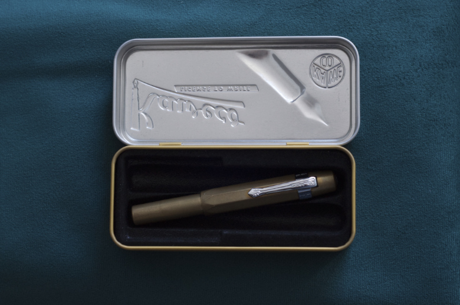
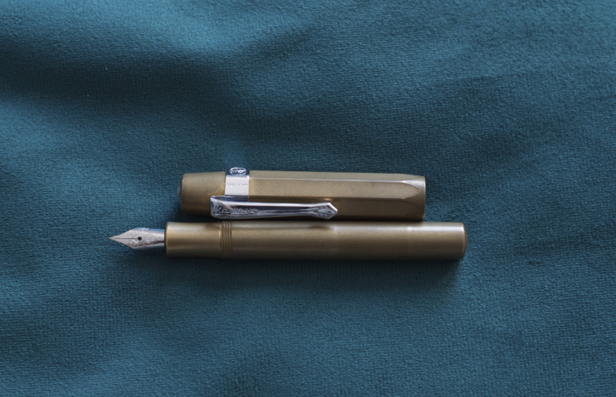
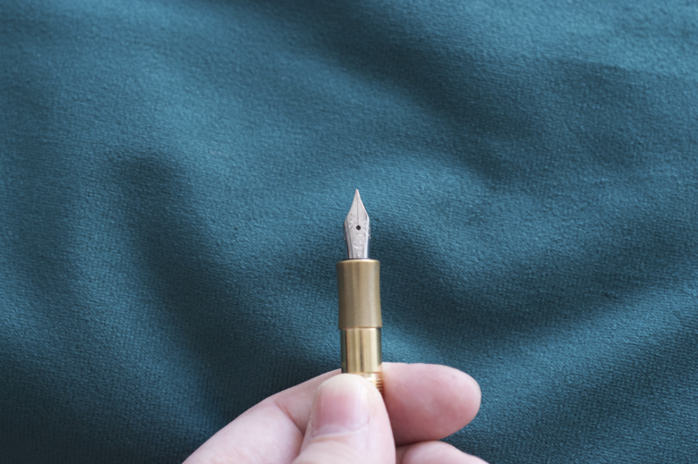
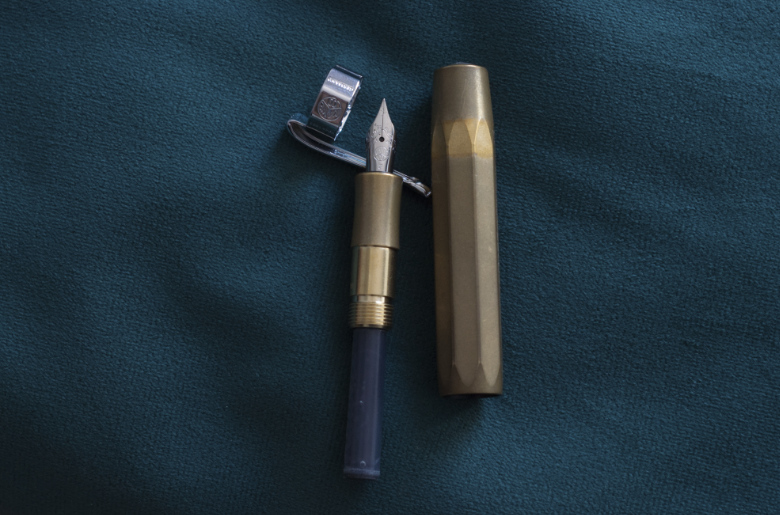
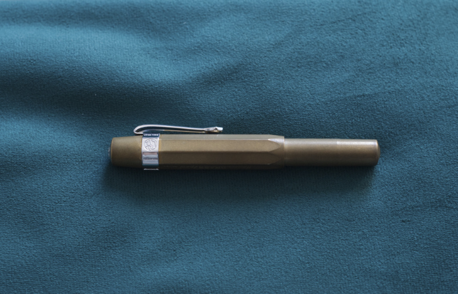

Kaweco BRASS Sport — the smallest and possibly the coolest fountain pen I own
At the beginning of 2024 I acquired a new fountain pen, Kaweco BRASS Sport. I have been looking at it for quite some time, pondering whether it was worth purchasing. In the first week of January I finally decided to check that pen out. Here is my review after two and a half months of usage.
When I opened the box my first thought was “this is a really small pen!”. I knew it was small, but seeing it firsthand, I was still surprised by its minuscule size. The size, however, goes in pair with quite a substantial weight, thanks, of course, to the solid brass casing. Closed, the fountain pen has a length of 107 millimetres, but once uncapped and posted, it converts to 135 millimetres, which is more conservative in size. Kaweco BRASS Sport weights 48 grams. In comparison, full-sized Aurora Talentum GT, my everyday carry, weights 34 grams. The bigger weight of Kaweco is a good think, though, because it makes a small pen easier to handle. It is also reassuring when I carry it in my pocket, because I know right away that it is with me and I have not lost it.
Together with the Kaweco BRASS Sport one gets a metal box, which has a black plastic mould inside, which allows to carry up to two Kaweco Sports in a parallel configuration, or a single pen in either a diagonal or straight configuration. It is a nice touch because the box can act as a sturdy case. Not that the fountain pen made of brass requires delicate treatment - on the contrary, it is impressively robust and almost indestructible. I only have one Kaweco Sport now, but in the future I want to get one of each metal collection, that is STEEL, AL and BRONZE versions.
 The metal box can hold up to two Kaweco Sport pens of any type.
In the box we receive a rectangular black sticker with Kaweco logo, as well as a tiny brochure featuring the most important dates in Kaweco’s history, labelled in both German and English (although English translation is not error-free). The metal box is further enclosed in a cardboard sleeve, with sleeve’s outer surface lacquered in black, with white and grey lettering. I appreciate the multi-layered packaging of the fountain pen, offering both enhanced protection as well as serving as a proof of manufacturer’s care. I definitely will be using the metal case in the future, especially once I get another Kaweco Sport. One final addition is a single blue ink cartridge, in an international short size.
Initially, I was surprised to discover that Kaweco does not include a clip with Kaweco Sport fountain pen, but the reason soon became obvious. Due to pen’s size and portability, some people may prefer to not use a clip at all, as not to add additional bulk to the otherwise slim and sleek design. And for those who cannot imagine using a clip-less fountain pen, Kaweco offers a choice of four (!) colours, to combine with any Kaweco Sport as they please. I went for a chrome finish clip, which matches the colour of a steel nib.
 Kaweco Sport does not come with a clip, but one can choose to buy one separately. They are available in four colours: chrome, gold, black and bronze. The chrome one nicely matches the standard steel nib
I have also bought a mini converter, to allow for use of bottled ink. However, I have been using ink cartridges so far, mostly because the capacity of the ink converter turned out to be diminutive. I was surprised to see the converter being so small. It holds even less ink than a regular short cartridge, yet it looks like it is of a good quality and sturdy. It should work well for a long time. It is a classic piston converter with a plastic plunge and a rubber seal. The end looks like a standard international receptacle.
When I was reading opinions about Kaweco BRASS Sport, many people had complained about a characteristic smell of metal lingering on their hands after using the brass pen. In my particular case the smell of brass is faint and unobtrusive. It is closest to the smell of a coin. It lingers on a hand slightly, but is only noticeable to me when I stick my palm just under my nose. Washing my hands with a regular soap gets rid of it easily. It should be noted, however, that since the above-mentioned smell is a product of metal staying in contact with skin oils, it is possible that both the intensity and duration of the smell would vary from person to person.
Regarding the nib, I use a regular Kaweco Steel F nib, although one can swap it really easily with a gold-coated version or a different size. The nib is robust and works well regardless of time spent unused. The ink does not dry out in a capped pen, but the nib experiences occasional dry starts. There is no skipping or scratching, though. The width of a line produced by an F nib is approximately 0.3-0.4 millimetre, and there is virtually no variation in line width, which is consistent with a steel, non-flexible nib.
 The regular steel nib is nothing fancy, but it is reliable and robust enough, despite some dry starts every now and then
I have some pens with nibs that write nicer, although I would be afraid to use them in a situation when I need to scribe something down hastily, for the fear of applying too much pressure and deforming the nib. In that regard a steel nib of Kaweco Sport resembles a regular pen in terms of its resistance and usability. This reaffirms that Kaweco BRASS Sport is a perfect fountain pen for everyday carry.
After purchasing Kaweco BRASS Sport I found myself carrying a fountain pen much more often than before, due to its pocket size and toughness. This brass pen is incredibly robust. I have always worried about accidentally damaging my fountain pens when carrying them casually in a pocket, and this pen has absolutely removed my fear. I have a feeling that I could let a tank drive over it and the pen would still be functional.
I was surprised to observe how quickly the patina developed on brass and how dark it is. It was a matter of a couple of days, at most, and I were not even using the pen all that much. I store my fountain pens in a natural leather roll case, so maybe that was a factor in catalysing the patina development. Interestingly, there are few places where patina has not developed yet, mostly near the clip and its mount. It allows me to compare the original look of the fountain pen out of the box with its current tone. I preferred the raw, initial look of brass without the patina, mostly because the patina made brass look duller and noticeably darker.
 I was bewildered by how quickly the patina developed on brass casing, and how dull it made it look in comparison to the original shine
When writing for longer periods of time (an hour or so) the weight of the fountain pen may tire one’s hand quicker than a lighter, ebonite or aluminium pen. The solution is to simply un-post the pen and put the cap away. It makes Kaweco BRASS Sport half as heavy but also half as long, which may be another important factor in ergonomics. Nevertheless, I found this fountain pen to be a good choice regardless of its weight.
 The robustness and small size of Kaweco BRASS Sport make it a perfect pocket pen for everyday carry
In general, Kaweco BRASS Sport is a perfect everyday pen for me, and I am already looking forward to expanding my collection with the bronze version. Of course, should I purchase Kaweco BRONZE Sport, I will publish my opinion as well.
Yay!
- durability
- brass finish
- portability
Nay!
- patina makes the pen look dull
- slight smell of coins
- may be tiring to use in very long session when posted
Overall summary in three words:
interesting, unique, pocketable
This is article no. 11 from the 100 Days To Offload series.